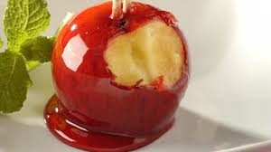
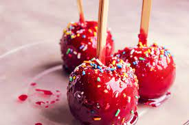
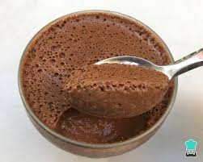

THILJJ
temos as tradicionais maças do amor
temos com granulados coloridos, de bolinha de chocolate ou o qual você querer!
temos os mousses tradicionais como: o de maracujá, limão, chocolate, etc.
também fazemos mousses personalizados e trufados
Quem somos?
Somos estudantes do ensino médio do Colégio Estadual Maria Isabel Guimarães, nossa meta é aprender a empreender, aprender a adiminstrar nosso dinheiro e no que investimos, aprender a lidar com pessoas e situações inesperadas no cotidiano.Também vamos usar nossa matéria de programação para expandir nosso público e colocar o que sabemos em prática.